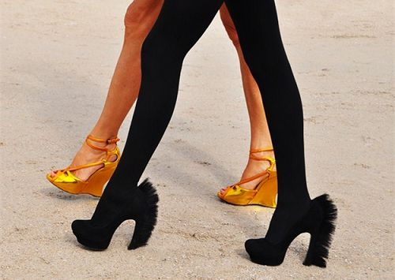

几点疑问。 @ Oct 19, 2010
如图，在中低温度下女孩儿的衣着，我有几点疑问：
1、薄纱、雪纺、真丝。。。面料的裙子，如何不粘在腿上？
***上周五我穿了真丝连衣裙，全棉里衬，南京目前温度约处于15~25度之间，裙子底部已经尴尬的粘在大腿上了。冬季国外的大街上，时常能见到反季节穿衣的女性，薄纱裙搭配羊毛外套或羽绒服，似乎没见着裙子粘在身上的尴尬。听说日本有种防静电喷雾，喷几下，裙子就自然垂落下来了，难道她们都有自己的秘籍？
2、光脚穿凉鞋？光腿穿裙？
***女性同志们都了解一些妇科知识，从小铭记长辈“寒从脚起”的叮嘱，寒凉大，易瘴气，影响妇科健康。果真西方妇女们的体质比东方妇女飚悍？

3、“恨天高”高跟鞋。。。
***中高跟鞋尚能接受，“恨天高”类型的鞋子，静止观看还挺优雅的。作为日常穿的鞋，它能胜任都市紧张的节奏吗？“恨天高”让独具动感魅力的疾步行走，变成小心翼翼地挪行，令女性显得强势，犹如踩着高跷的小脚老太。有人说舒适的高跟鞋象好男人一样难觅。适当的跟，既舒服又美观，保持自我是不是就是保留了属于自己的时尚？